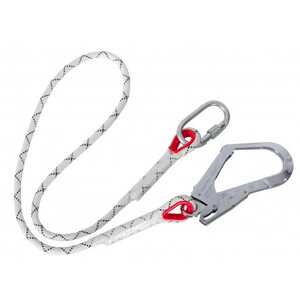
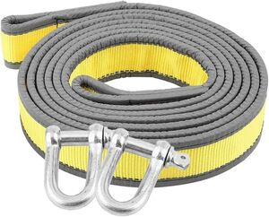

ⲣⲓⲃⲏ, -ⲃⲓ B nn f, rope with belt for hauling ship's cable: K 134 ϯⲣ. خلاوة (1 MS وهو شنوطة اللبان). Cf BIF 20 70 n, Almk 2 105, Dozy 1 791.


ⲣⲓⲃⲏ, -ⲃⲓ B nn f, rope with belt for hauling ship's cable: K 134 ϯⲣ. خلاوة (1 MS وهو شنوطة اللبان). Cf BIF 20 70 n, Almk 2 105, Dozy 1 791.
| view | ⲛⲟⲩϩ SALF ⲛⲁⲩϩ Sa ⲛⲱϩ S ⲛⲟϩ B ⲁⲛⲟⲩϩ, ⲁⲛⲛⲟⲩϩ F | (noun masculine) rope, cord [σχοινιον]
ship's cables acrobbat's tight rope1220 |
| view | ⲉⲣⲃⲱⲥ B | (noun masculine) rope of single ply2752 |
| view | ⲕⲁⲡ SB | (noun masculine) string of harp &c [χορδη]
thread, string, strand single hair letter of alphabet (ref to linear form)2861 |
| view | ϣⲑⲱⲧ B | (noun feminine) rope of palm-fibre1872 |
| view | ⲗⲉⲃⲁⲛ SB ⲗⲁⲃⲱ B | (noun masculine) ship's hauling-cable945 |
| view | ⲙⲁⲛⲓⲛ, ⲙⲁⲗⲗⲓⲛ, ⲙⲁⲗⲓⲗ S | (noun) band, cord (?)1076 |
| view | ⲙⲁϣⲣⲧ S ⲙⲁϣⲉⲣⲧ SB | (noun masculine/feminine) cable of palm fibre1139 |
| view | ϣⲗⲟⲡⲗⲡ S | (noun) meaning unknown, thread, cord (?)1904 |
| view | ϣϫⲱⲧ SB | (noun feminine) meaning uncertain, strip, cord (?)2049 |
| view | ϩⲱⲥ SBF ϩⲱⲱⲥ, ϩⲟⲩⲥ S ϩⲟⲥ B | (noun masculine) thread, cord [σπαρτιον, κλωσμα]2282 |